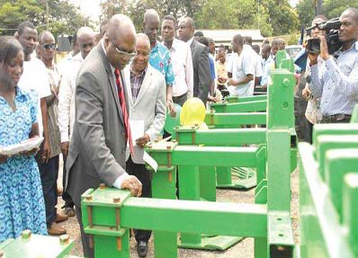

Gallery
-
Planted Cassava
Cassava planted on ridges to aid mechanisation
Image/A -

Harvesters
The Minister heading the Ministry of Food and Agriculture (MoFA) of Ghana Min Hon Kofi Humado comissioned harvesters
Image/B -
IN OPERATION
Mechanically harvested cassava in a windrow
Image/C